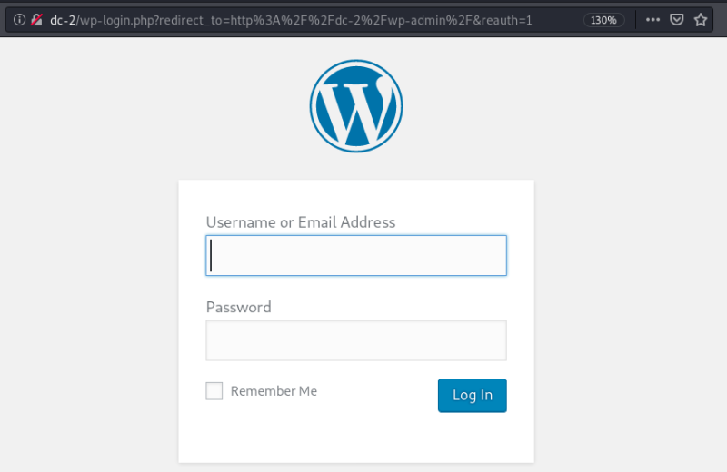
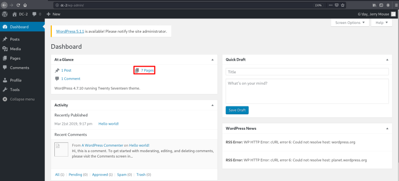
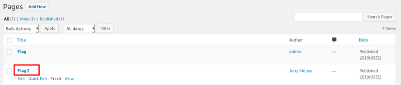
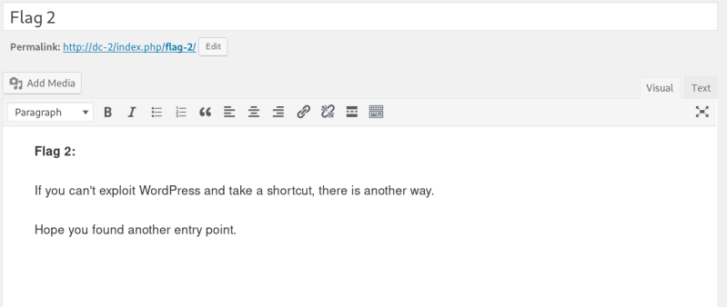

7. Login Wordpress (2nd flag)
Log in Wordpress to enumerate the plugins and themes.
a) Go to http://dc-2/wp-admin/ and use the credentials we've got in the previous step.
• Username: jerry.
• Password: adipiscing.


b) After enumerating different parts of the website you can see there are 7 pages.
Click on it.
You'll see a page called “Flag 2”. When you enter in that page you'll see a hint.


You got your second flag.
 Index
Index